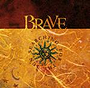

| Artist: | Brave |
| Title: | Searching For The Sun |
| Label: | Dark Symphonies Dark 17 |
| Length(s): | 48 minutes |
| Year(s) of release: | 2002 |
| Month of review: | [09/2002] |
| 1) | Escape | 3.40 |
| 2) | I Believe | 4.33 |
| 3) | Falling Into Bliss | 3.43 |
| 4) | Trapped Inside | 4.43 |
| 5) | Before Nightfall | 4.34 |
| 6) | To Dream Again | 2.25 |
| 7) | Bleed Into Me | 4.42 |
| 8) | New Beginning | 5.36 |
| 9) | Out Of Focus | 2.33 |
| 10) | Candle In The Dark | 4.51 |
| 11) | Waiting All This Time | 6.36 |
I Believe is in the same vein as its predecessor, only with flat sounding drums being present a little too much, and some pretty hefty guitaring.
Falling Into Bliss sees the acoustic guitar taking over from the electric for a track a bit more of a ballad.
In Trapped Inside the strong guitars over a somewhat oriental sounding melody remind me of The Tea Party. The intermezzo gives the song another face, making this a less obvious song than the ones before.
Before Nightfall is another acoustic track, pretty friendly, but not all that striking.
To Dream Again is a rather beautiful atmospheric intermezzo. Very nice.
Bleed Into Me sees the return of the flat drum. Could have done without that, frankly, especially since this song doesn't have much else to offer. All in all a bit of a indifferent. The echoing vocals known of All About Eve are employed in this one.
New Beginning refreshes the memory of The Tea Party, an effect only further strengthened by the vehemently sung chorus. This more spicy song does wake one up after the more tranquil tracks before it.
The guitar lines in Out Of Focus remind me of the up and down riffs Tool uses, and Loose's timbre stronger and stronger reminds me of Dutch singer Judith. This track is more technical than others. Nice change
Candle In The Dark is a piano vocal track. Rather tranquil, a tad too tranquil for its length.
Waiting All This Time has jangly verses, and a spunky chorus. As the track progresses it gains some, much needed, depth.